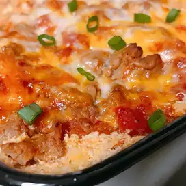

Lasagna recipe

Description
Lasagna is a type of pasta, possibly one of the oldest types,
made of very wide, flat sheets. Either term can also refer to an
Italian dish made of stacked layers of lasagne alternating with fillings
such as ragu (ground meats and tomato sauce), vegetables, cheeses
(which may include ricotta, mozzarella, and parmesan), and
seasonings and spices, like Italian seasoning, such as garlic,
oregano and basil.
Ingredients
- 1 pounds ground turkey
- 3 gloves garlic, chopped
- 1 onion, chopped
- 28 ounce enchilada sauce
- 15 ounce diced tomatoes
- 16 ounce cheese
- 1 egg
- 1 tablespoon vegetable oil
- 6 inch corn tortillas, halved
- 1 green onion, diced
Steps
- Heat oil in a large pot over medium heat. Add onion and garlic; cook and stir until onion is translucent, about 5 minutes. Stir in ground turkey; cook until no longer pink, about 5 minutes. Drain excess grease.
- Stir enchilada sauce and diced tomatoes into the pot. Simmer until flavors combine, about 20 minutes. Remove from heat.
- Preheat the oven to 375 degrees F (190 degrees C).
- Mix cottage cheese, egg, and cumin together in a small bowl.
- Spread 1/3 of the turkey sauce in the bottom of an 8-inch baking dish. Cover with 1/2 of the corn tortillas. Spread 1/2 of the cottage cheese mixture on top. Sprinkle 1/3 of the Mexican cheese on top. Repeat layers once more, ending with remaining turkey sauce and Mexican cheese.
- Spray a large piece of aluminum foil with cooking spray; cover the baking dish with aluminum foil.
- Bake in the preheated oven until bubbly, about 30 minutes. Remove aluminum foil and continue baking until top is browned, about 15 minutes. Cool for 15 minutes before serving. Garnish with green onion.